Authored by Gurnoor Narula (Placeholder) and Mustafa Qazi (Volt Capital)
The decentralization and sustainability of a blockchain network’s validator set is a direct product of equitable validator economics and reward mechanisms. Solana currently has a validator stake distribution with high kurtosis, where a majority of stake is controlled by a relatively small set of nodes. Unless tweaks are made, stake inequity will further widen due to the positive feedback loop created by Solana’s high issuance schedule and unsustainable validator grants program.
However, there are a set of realistic levers which we can push and pull within Solana’s core protocol that would improve the sustainability and decentralization of Solana’s validator set:
Alpenglow is Solana's newly-passed high-performance consensus mechanism, prioritizing fast finality and real-time data dissemination. Additionally, Alpenglow reduces validator operating costs by partially eliminating voting costs. This may allow for a safe reduction in Solana's inflation rewards by lowering the break-even point for validator profitability.
While most of the ecosystem agrees that Solana's static inflation schedule is not ideal, the choice of mechanism to replace it remains contentious. Dynamic inflation schedules such as SIMD-228 and Left-Curve 228 have been popular proposals to base future SIMDs on.
While these levers independently might have a host of advantages and downstream consequences, they can be optimized in tandem to achieve our goal of leveling Solana’s stake distribution. Given the overwhelming acceptance of Alpenglow and its proposed changes to Solana’s rewards mechanisms, we hope to find an optimal inflation schedule and analyze the second-order effects of these core protocol changes on the decentralization and equity of Solana’s validator set.
Solana’s Current Validator Set
Solana falls victim to the same stake centralization effects as other Proof-of-Stake blockchains. The majority of Solana's stake is currently concentrated with less than 100 validators (~5% of all validators) staking > 1 million SOL each.
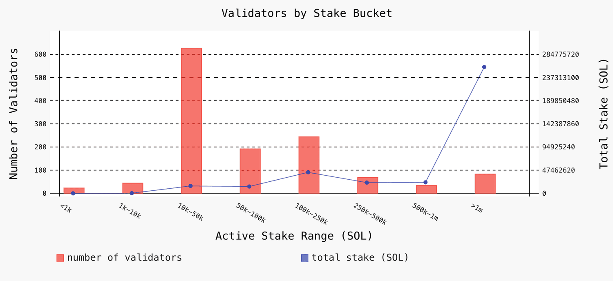
This concentration is a direct outcome of the positive feedback loop created by stake-weighted rewards mechanisms: high-stake validators are probabilistically more likely to be selected as leaders, thereby capturing associated block rewards, and reinvesting their profits to attract even more stake. Meanwhile, low-stake validators are left in a race to zero margins to remain competitive. While avoiding this “rich-getting-richer” effect in stake-weighted systems remains elusive, we can hope to improve equity amongst the validator set by limiting extraneous sources of revenue such as inflation rewards, and lowering the break-even point for smaller validators by eliminating excess operational costs.
Inflation rewards benefit high-stake validators much more than they do low-stake validators, as made clear by the distribution of revenue sources among Solana’s highest- and lowest-earning validators shown below:
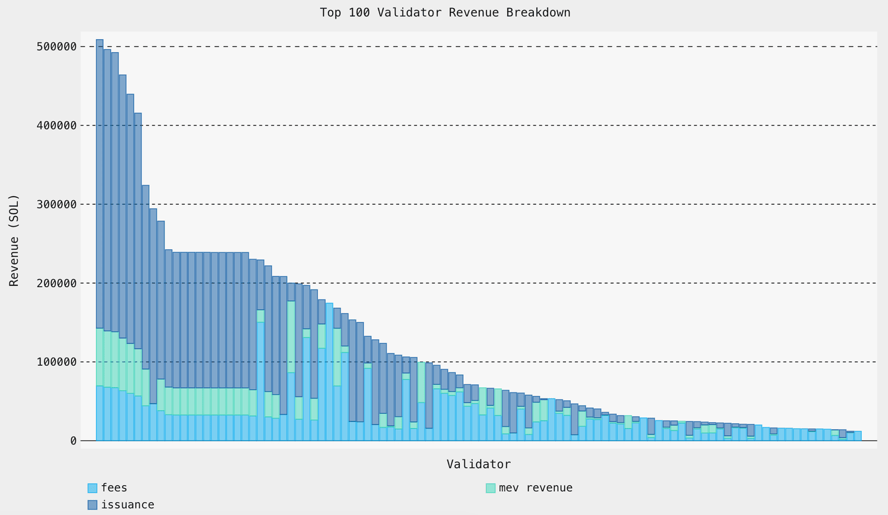
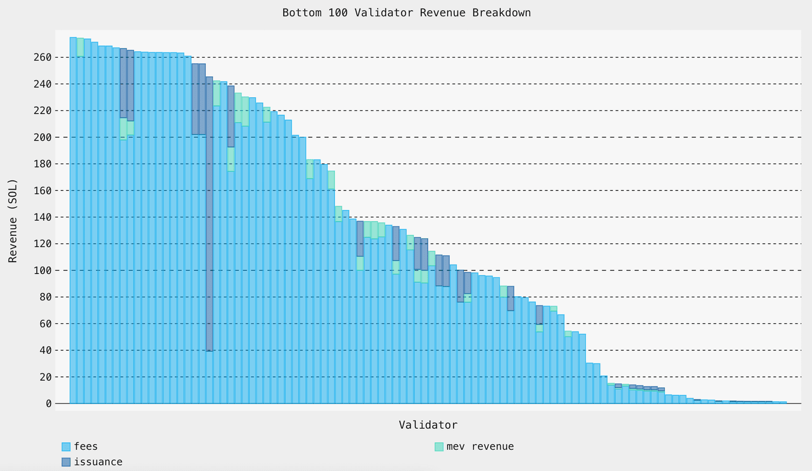
Limiting extraneous sources of revenue for high-stake validators, especially inflation based, is a low-hanging fruit to help address an inequitable validator set. Low-stake validators face tight competition in providing staking services and are forced to pass close to all value back to the delegator. Therefore, they are much more reliant on the transaction fees and MEV revenue they earn whenever they are selected as a slot leader.
Solana's Validator Set under Alpenglow
While Alpenglow is primarily a more performant consensus, voting, and data dissemination engine for Solana, it introduces a host of economic mechanisms that can positively impact validator set equity.
Alpenglow's major incentive design changes are:
A hard cap of 2000 'active' validators that participate in the Solana network in a given set of slots, determined by highest stake weight.
Replacement of expensive onchain voting costs with offchain voting and a Validator Admission Ticket (VAT) per epoch. Receiving a VAT means being in the ‘active’ set, and VATs are proposed to be strictly less than the onchain voting costs currently.
Introduction of micro-rewards for fast-path consensus actions and aggregation of offchain voting activity. However, these rewards may partly be offset by the costs of these very activities.
Open Area of Research: Proposed implementation of participation micro-rewards that incentivize non-malicious actions for Alpenglow’s block propagation and voting mechanisms.
Submitting consensus logic votes onchain remains the most expensive component of a validator's operational costs. Original excitement of Alpenglow v1.0 was centered around the complete elimination of these onchain voting costs, which stand at ~1 SOL per day. This original feature promised to significantly reduce the running costs of any validator, which lowers the break-even point or, conversely, increases the profitability of all validators. This was especially impactful for low-stake validators as their reliance on running at a deficit or on the Solana grants programs would have been alleviated. It also helped re-entertain the idea of decreasing inflation rewards without the same level of pushback from validator teams, as long as their overall profitability is equivalent to or higher than the status quo.
To quantify the effects of these changes, we focus on the Gini Coefficient over validator profits, which measures inequality and concentration in a distribution. A Gini coefficient of 0 indicates perfect equality while 1 indicates one operator holding all of the profits. We argue that this metric is a good proxy for decentralization more broadly. While the distribution of stake sizes is often used for this purpose, our analysis assumes that profits are a better metric of validator success and viability. Therefore, we can measure how well profits are distributed to understand how decentralized the chain is in practice.
To begin, the status quo distribution for average validator profit has a Gini Coefficient of 0.9314, as shown below.
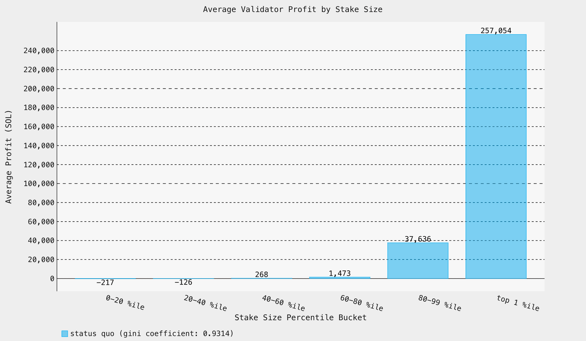
Unsurprisingly, eliminating voting costs entirely results in all validators becoming profitable with an outsized impact on low-stake validators. The Gini coefficient then decreases to a healthier 0.9124.
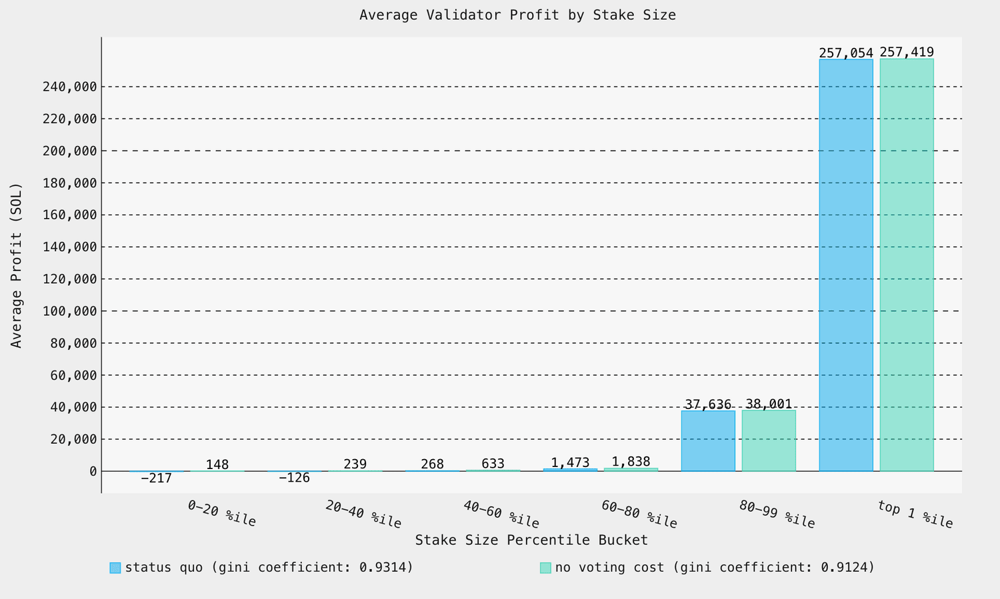
However, making it incredibly cheap to participate in the consensus and voting process onchain makes Solana susceptible to Sybil attacks, hence the Alpenglow v1.1 update of the Validator Admission Ticket. Amongst the active set, validators with a sufficiently large portion of the stake can comfortably split their stake into n nodes to push out n-1 validators at the bottom of the active set. To address this threat, Alpenglow v1.1 set the VAT = 80% of the original per epoch voting cost, or1.6 SOL / epoch, as compared to the ~2 SOL / epoch for onchain voting activity. In short, this value is well above the threshold at which these Sybil games are profitable for validators. After tweaking the cost of voting from 1 SOL to 0.8 SOL per day, the Gini coefficient goes back to 0.9306, an insignificant difference from the status quo.
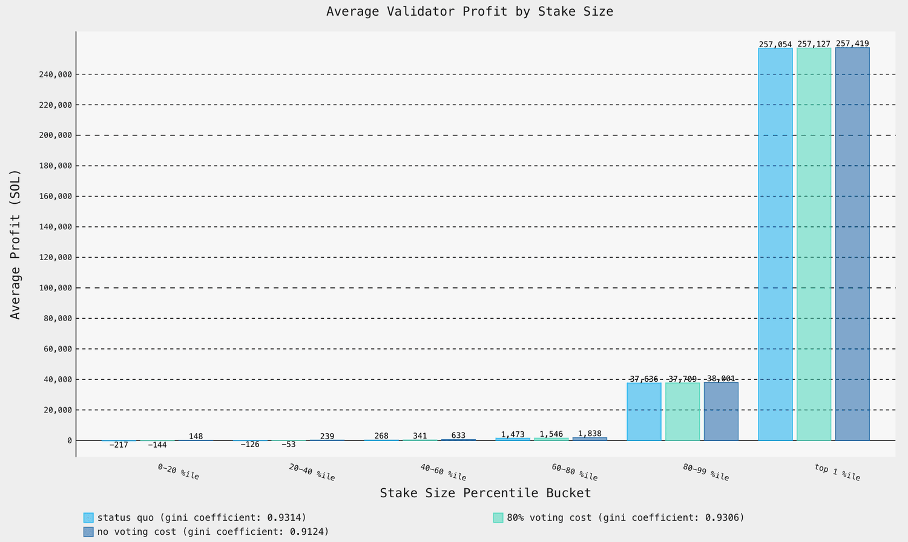
Pulling Levers
With Alpenglow v1.1's reintroduction of voting fees in the form of VATs, the hope of significantly reducing a major operational cost is lost, leaving decentralization, expressed through the Gini coefficient, essentially unchanged. However, there are other levers to pull to improve decentralization.
As we saw above, the top validators rely more heavily on issuance rewards than the long-tail validators. Intuitively, lowering issuance should result in more equitable distributions. We can confirm this by mapping the improvements in Gini coefficient to different inflation rates, shown below.
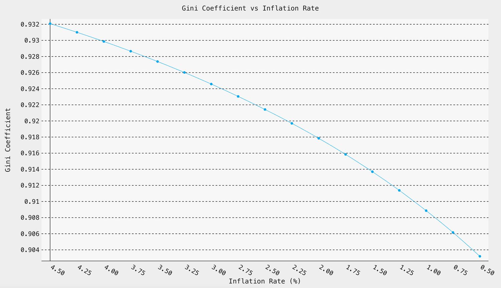
As expected, lowering inflation consistently improves the Gini coefficient. Interestingly, the rate of improvement accelerated slightly when going from 1.5% to 0.5% inflation, as compared with other parts of the curve.
Clearly, reducing inflation this dramatically is not feasible. Nonetheless, this confirms our hypothesis that inflation is the best available lever to improve decentralization, under the foregone conclusion that Alpenglow and its various reward mechanisms will be implemented. Below, we explore different proposals to adjust inflation with this relationship in mind.
SIMD-228: Dynamic
While SIMD-228 did not pass the required 66% of votes to be implemented, the vote was narrowly missed, indicating that a slightly tweaked version is likely to pass. SIMD-228 would have changed the currently static SOL inflation rate to one based on the overall staking rate, or the percent of circulating supply currently staked with validators. The idea is simple: when staking rates are too low or too high against some target (say 65%, roughly the current stake rate), increasing or decreasing inflation will pull the system towards the target by changing yields accordingly.
When we recompute rewards and profits after implementing both SIMD-228 and Alpenglow, we yield the following scenarios for validator profits under different global staking rates:
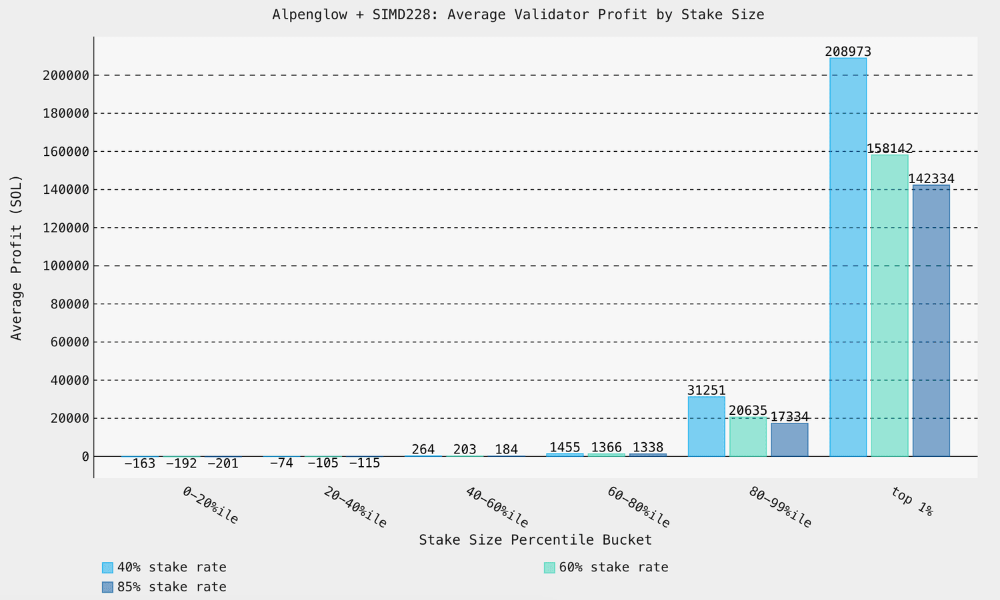
In the highest stake rate scenario of 85%, we yield the largest equalizing effect of any regime, lowering the Gini coefficient to 0.9011. The caveat here is that these conditions will rarely occur depending on the controller selected. How can we adjust this controller to get better decentralization?
More formally, the proposed controller equation is as follows:
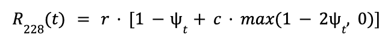
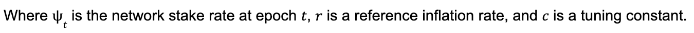
The value of r is important here – the system will steer inflation towards this target, which was set at the current Solana inflation rate of 4.32%. One approach to improve the Gini coefficient is to set r lower, which should result in the system consistently inflating less and achieving the desired benefits.
VAT Pricing
It is important to note that the maximum benefits of changing inflation are marginal. Our best improvement of the Gini coefficient was from 0.9314 to 0.9011 under extreme SIMD-228 conditions. This suggests that several levers must be pulled to trigger a meaningful change in validator economics.
The obvious next step is to revisit VAT pricing. The reduction to 0.8 SOL/day, while providing some marginal benefit, can be safely reduced to 0.135 SOL/day according to Max Resnick's analysis.
Intuitively, this change should pull many more validators into profitable territory. When combining 0.135 SOL/day VAT pricing with SIMD-228 inflation, we yield:
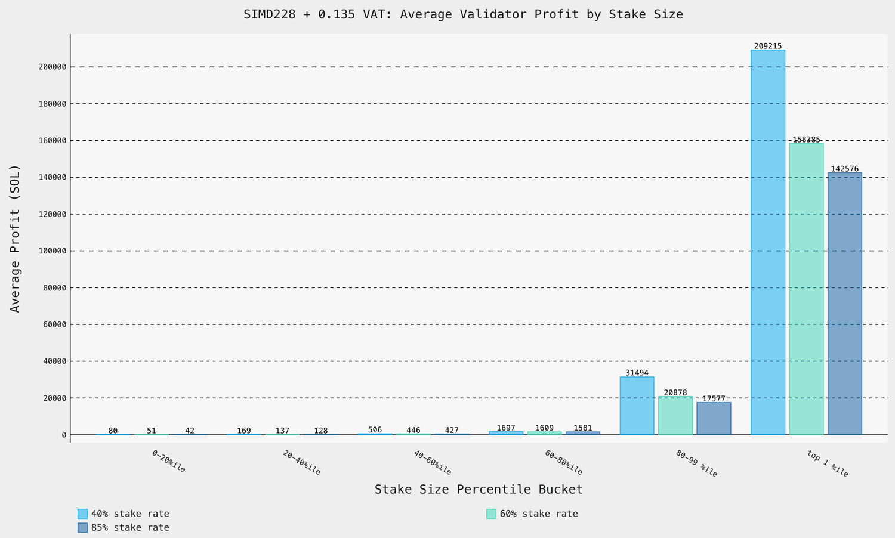
Noticeably, all validator buckets have positive average profits. We also find the largest Gini coefficient improvements:
40% Stake Rate 0.9081
60% Stake Rate 0.8884
85% Stake Rate 0.8793
Even in the lowest stake scenario, the Gini coefficient is 0.007 shy of our previous best. We jump from a status quo of 0.9314 to 0.8793 in the high-stake scenario. This tracks well with our intuitive expectations: lowering VAT pulls smaller validators into profitable territory, while dynamic inflation addresses the inequity in the distribution of profits.
Implementation & Closing Thoughts
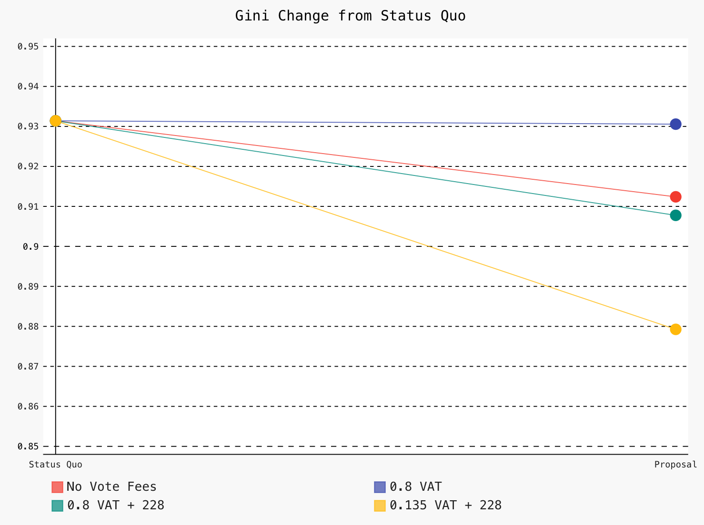
The process of updating Solana has waterfall effects on Solana’s incentive design, validator economics, and therefore, validator set equity. Certain proposals, such as Alpenglow, are inevitable upgrades given their performance, engineering, and user experience benefits. Under the assumption of these proposals and their economic side effects, we can pull additional levers to optimize Solana’s validator set decentralization.
While we steer clear of discussions about economics within the Alpenglow proposal, we consider other levers such as Solana’s inflation schedule and the optimal VAT that can pair effectively with Alpenglow to accomplish a more decentralized and equitable validator set. Optimizing these levers was only possible because of Alpenglow’s transition away from onchain voting costs, which were a static, burdensome cost inhibiting the profitability of a majority of Solana validators.
Within realistic constraints, we found that a modified version of SIMD-228 and a lower VAT fee of 0.135 SOL/day is currently optimal, pending a more formal discussion of Alpenglow’s reward schemes.
View our codebase and data analysis on our public GitHub repository.
Importantly, our analysis also depends on static data from Helius. The model makes several simplifying assumptions on validator costs and estimates of validator revenues. Our analysis of SIMD-228 does not account for how inflation may change over time in different scenarios. While we believe that such analysis will probably not find significant changes to decentralization, we encourage the community to use our work to explore alternative designs.
We also recognize that other parts of Alpenglow's reward schemes, namely Rotor and Votor rewards, are yet to be specified thoroughly. Although we don't expect these choices to change our results too drastically, the design space is broad and entirely new mechanisms may warrant changes to the current VAT proposal. This is an area of active research for Solana Labs and Anza and we expect SIMDs in the near future.